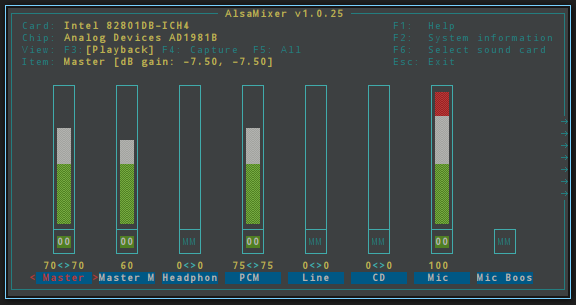
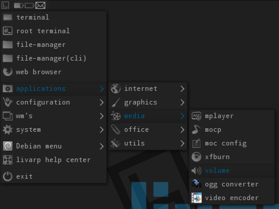

lang fr|gb

sound config
volume management is entrusted to alsamixer, the console volume control center.
operations are simple:
- display channel with Left/Right arrows.
- decrease/increase the volume with Up/Down arrows.
- mute channel with the 'm' key.
- Esc to leave.
- complete help with the F1 key.
alsamixer can be launched from a terminal with the 'alsamixer' command or from a menu: config:volume or apps:media:volume
